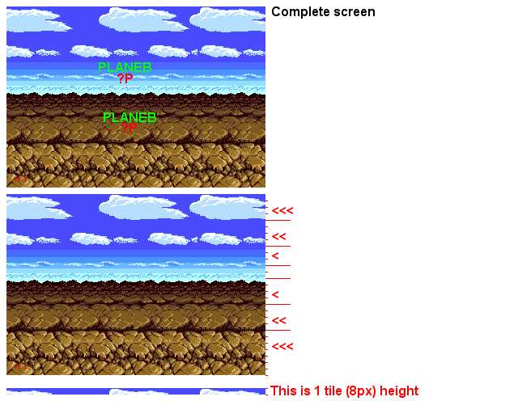

Pic 5 - Tile/Tile H Scrolling
In Lethal Enforcer 2 & Bob & BodyCount, the scroll was performed in the whole plane. Here, in the Aleste intro, the horizontal scroll is performed Tile/tile.
When in Tile/tile Hscroll, each 8 pixels lines in the scroll table, you can put a scroll values to scroll a complete tile line.
